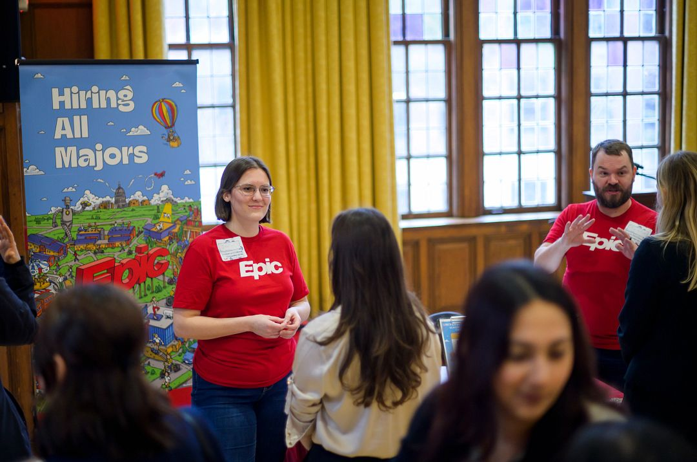

When you come to UMSI, you leave with a different resume.
You’ll be supported by a dedicated office that partners each year with more than 100 organizations — from the National Park Service to the Library of Congress.

Embrace real-world challenges
Step beyond the classroom and work on challenges that matter to real organizations and communities. Engaged learning gives you the opportunity to collaborate with real clients, understand their needs, and apply what you have learned to problems without a single “correct” answer. Instead of working with hypothetical scenarios, you can experience the complexity of real-world problem solving—asking the right questions, navigating different perspectives, adapting to changing needs, and developing solutions that are meaningful to the people you are working with.
Working with real clients also helps you develop skills that are difficult to gain from coursework alone. You can practice communicating with stakeholders, collaborating across different roles and backgrounds, managing ambiguity, and turning ideas into actionable outcomes. These experiences allow you to connect academic knowledge with practical application while gaining a clearer understanding of what different fields and careers actually look like. Most importantly, you can build confidence by seeing your work create value beyond the classroom and carry those experiences, skills, and insights into your future academic and professional endeavors.
Working with Clients in Courses
Client-based courses bring real-world organizational and industry challenges into the classroom. Working in teams and with guidance from instructors, students apply concepts and methods from their coursework to develop research, designs, strategies, recommendations, or other deliverables for an external client.
These courses are generally campus-based and structured around an academic term. They give students practical experience communicating with clients, managing projects, working collaboratively, and responding to professional needs and expectations.
- Field Research in the Public Sector - SI 350
- Information Analytics Project - SI 485/495
- User Experience Final Project - SI 487/497
- Problem-Solving with People, Information, and Technology - SI 500
- Citizen Interaction Design - SI 538
- Engaging with Communities - SI 547
- Preserving Information Resources in a Digital Age - SI 581
- Needs Assessment and Usability Evaluation - SI 622
- Assessment in Cultural Institutions - SI 633
- Mastery User Experience Research and Design - SI 699
- User-Centered Agile Development - SI 699
- LAKES Mastery Course - SI 699
- Big Data Analytics - SI 699
Engaged Learning with Community Partners
Community-engaged learning takes students beyond the classroom to work alongside nonprofit organizations, public agencies, civic groups, and other community partners. Students learn directly from partners and community members while exploring challenges within their social, cultural, and organizational contexts.
Through fieldwork and sustained engagement, students build relationships, develop a deeper understanding of community priorities, and contribute to work with public or social impact. These experiences emphasize reciprocity, respect, and collaboration with communities rather than simply delivering a product to a client.
Doing Research with Faculty Members
Faculty-led research gives students the opportunity to participate in scholarly inquiry and the creation of new knowledge. Under a faculty member’s mentorship, students may review literature, develop research questions, design studies, collect or analyze data, evaluate findings, and communicate results.
These opportunities are research-oriented rather than client- or fieldwork-centered. They help students understand the research process, strengthen analytical and methodological skills, and explore academic or professional interests in greater depth.
- Research Experience Development Program
- Independent Study
- Master's Thesis Option Program
- UMSI Teresa Noel Urban Blaurock Student Research Award